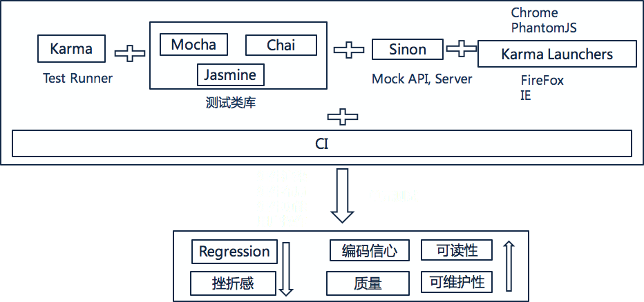
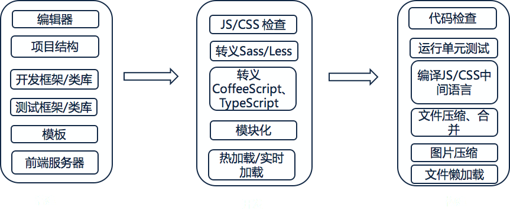
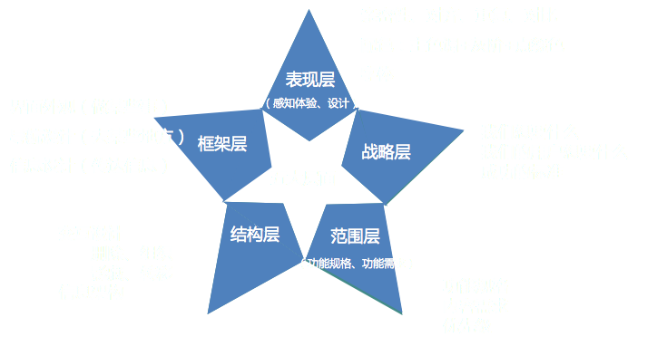
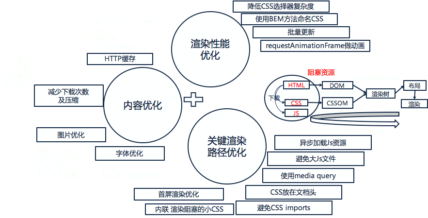
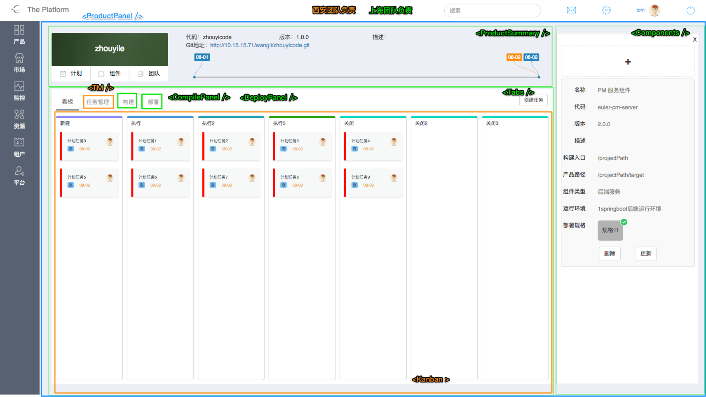
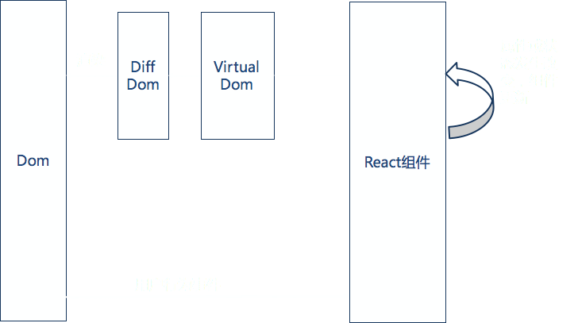

React实战
现代前端技术企业该怎么玩
作者 奚金鑫
React风格的企业前端技术
- 成熟的前端框架
- 快速的前端工作流程
- 流畅的用户体验
成熟的前端JS框架是项目的支柱
| Angular2 | React | Vue2 | |
|---|---|---|---|
| 易上手 | 3 | 4 | 5 |
| 页面性能 | 5 | 5 | 5 |
| 兼容性 | 4 | 5 | 4 |
| 前后端同构 | 4 | 5 | 3 |
| 移动端Native | 4 | 5 | 3 |
| 测试 | 5 | 5 | 5 |
| 社区 | 5 | 5 | 3 |
成熟的前端测试框架保证产品质量
工作流程从繁琐的...
...到流畅的工作流程

流畅的用户体验从设计做起
不断优化提升用户体验
资源
拥抱三大要素，前端产品👍👍👍
但是...
知识真的是海洋
到底怎么玩
实战
- 快速上手
- 前后端分离
- React + Redux + React Router
- 性能调优
快速上手
- 编辑器
- 项目结构
- 开发类库
- 测试类库
- 开发规范
- 一键开发
- 一键构建
BoilerPlate
CLI
DEMO
前后端分离
搭建前端Mock Server

DEMO
React Best Practice
React + Redux + React Router
React大法好
- 简单易学，上手快
- JSX使编程更简单
- 组件化编程方式好处多
- 虚拟Dom技术，使得开发简单，而页面性能又好
- 前后端同构, 搜索引擎更友好
- 强大的开发工具
- 社区强大
组件化编程，代码松耦合，分而治之
Virtual DOM提高页面性能
Redux单向数据流使开发简单

React Router绑定UI和URL